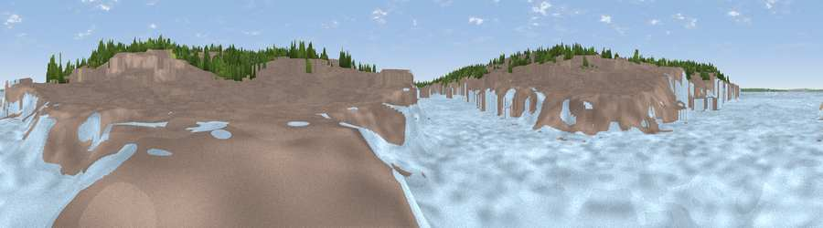

Viewpoint near East Cowes
#44414 in England · top 89% of its area beats it · near East CowesWhere it is
The exact computed spot (SZ 50124 95675). Click the marker for map links.
The view, rendered

A 360° render of this exact spot computed from the terrain model, tree cover and land cover — summer colours, afternoon light, calibrated against photographs of famous viewpoints. Real trees, hedges and buildings will differ in detail.
The panorama
Grey silhouette: terrain skyline in each direction (720 bearings, Earth curvature and refraction included). Dashed green: skyline with trees (+15 m) and buildings (+8 m) as obstacles. Blue strip: how far the ground is visible on each bearing.
Where the view opens
Wedge length = distance to the farthest visible ground on that bearing (vegetation-aware). Rings at 10, 25 and 50 km.
What fills the view
67% built-up · 14% water · 13% woodland · 6% grassland
Angular shares of the visible panorama (visual magnitude), not map area. Landscape diversity 0.43 (0–1 Shannon).
Key numbers
More beautiful places nearby
The staircase of upgrades: each row has a higher view potential than everything closer. Driving times are estimates from straight-line distance, calibrated against real road routing — check an actual route before setting out.
| Place | Direction | Drive | Score |
|---|---|---|---|
| Viewpoint near East Cowes | NNE · 0 km | ~1 min | 26.7 |
| Sticelett Hill | WSW · 4 km | ~9 min | 36.8 |
| Viewpoint near Gurnard | WSW · 4 km | ~9 min | 45.1 |
| Viewpoint near Porchfield | WSW · 6 km | ~13 min | 45.7 |
| Viewpoint near Porchfield | WSW · 7 km | ~15 min | 54.2 |
| Viewpoint near Carisbrooke | SSW · 8 km | ~16 min | 72.1 |
| Viewpoint near Arreton | SSE · 9 km | ~18 min | 74.1 |
| Arreton Down | SSE · 10 km | ~19 min | 77.7 |
50.75852, -1.29074 · source: osm viewpoint · position refined by local search. Computed location — check access rights before visiting.